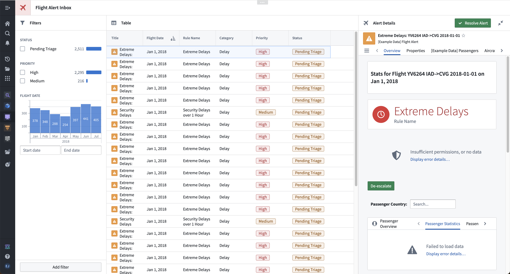
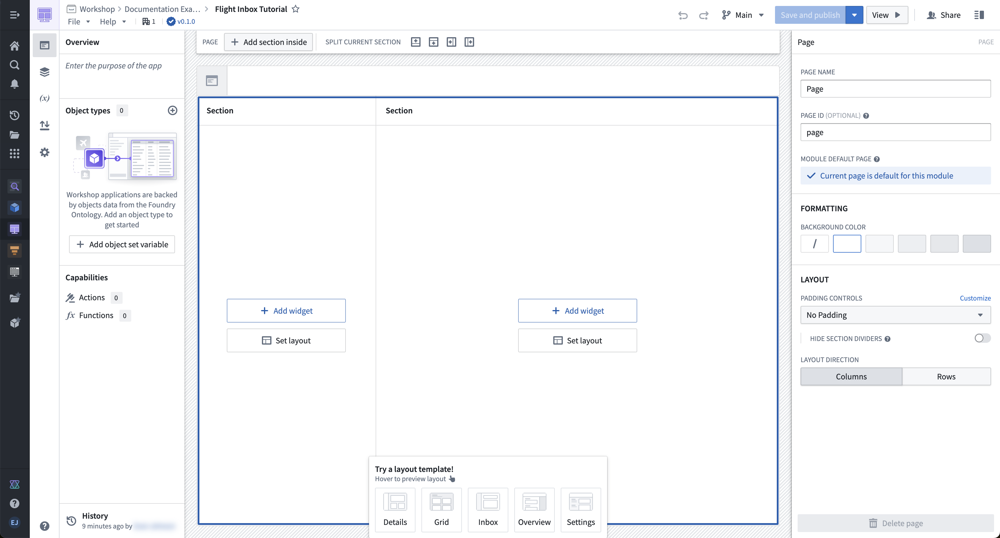
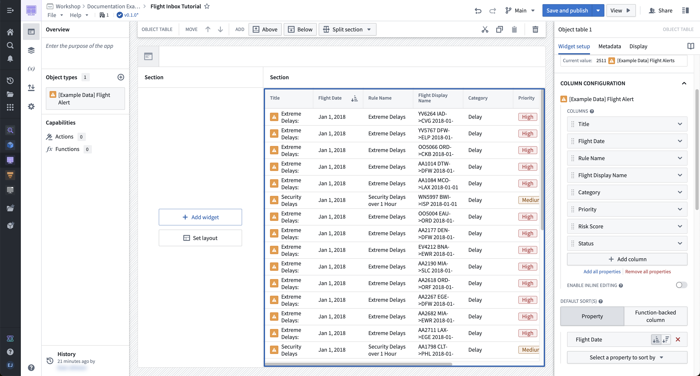
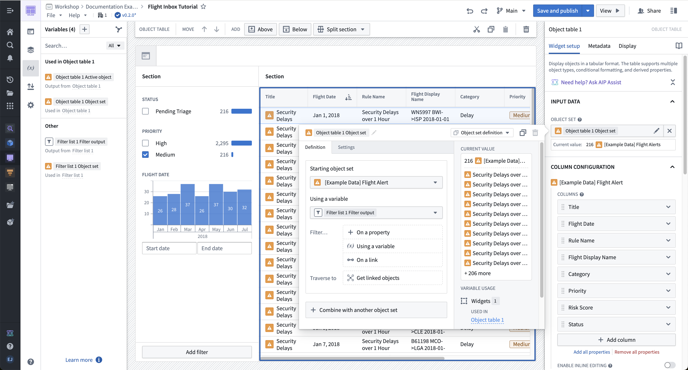
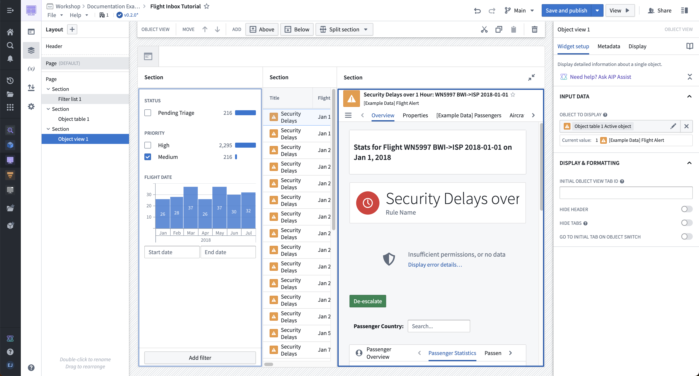
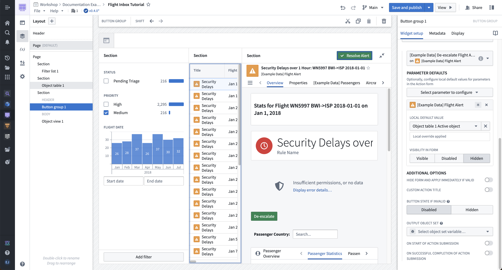

:::callout{theme="neutral"} Note that this tutorial is intended as an illustrative example. Since the Foundry Ontology is customized to your needs and data, you may not have access to the same ontology resources to complete the tutorial as written. :::
This tutorial is intended for new Workshop builders and walks through the configuration of a simple Workshop module. Concepts covered below will include creating a new module, configuring widgets like the Object Table, Filter List, and Object View, and enabling writeback through an Action-backed Button Group widget.
In this example storyline, our aim is to build a âFlight Alert Inboxâ that surfaces potential flight delays and cancellations and presents a user with options to easily understand and take action on these alerts. Our target user is an airline supervisor who needs to track these alerts in real time, prioritize which alerts require response next, and resolve alerts quickly.
The image below shows the end result of this tutorial:

:::callout{theme="success" title="Palantir Learning portal"} Get started and build your first application with the course on learn.palantir.com â. :::

Add and configure an Object Table widget for the Flight Alert objects:

To configure filtering, first add and configure a Filter List widget for Flight Alert objects:
On the left side of your module layout, select Add widget, then choose the Filter list widget from the selector that appears.
In the configuration panel for the Filter list 1 widget, select the Object set dropdown menu to define the data that will be displayed. Again, select + New object set variable, and in the variable definition popover that appears, choose the Starting object set dropdown menu then [Example Data] Flight Alert. You must define a new object set variable to back the Filter List widget so that the filter does not limit the base object set that backs the widget.
Return to the main configuration panel for the Filter list 1 widget, and look for the Filters Configuration section to use the + Add filter button to add filters for the following properties: Status, Priority, and Flight Date.
In the Filter List configuration, set Layout configuration to vertical to display filters in a stacked list. For a more compact experience, you can instead choose Pills, which displays filters as interactive pills that open a popover for configuration.
At the bottom of this configuration panel, switch on the toggle to Allow users to add and remove filters.
Next, modify the Object Table widget to accept the filter criteria output from our Filter List widget:
:::callout{theme="neutral"} The Filter list 1 Filter output is an object set filter variable. You can set default filters and, if needed, enable filter value extraction to reuse selected values elsewhere in your module. For more information, see the documentation on object set filter variables. :::

Add and configure an Object View widget for the active object in the Object Table widget.
Select the section surrounding the object title on the right side of the screen and note the Section toolbar that appears at the top of your module. Choose the Add â Right option to add a new section to the right of the Object Table widget.
Select the new section that appeared. Within the Section configuration panel on the right, toggle on the options for Section Header and Collapsible. Also, set the column width to an Absolute pixel size of 500.
Next, select + Add widget within this section, then select the Object View widget from the selector that appears.
In the configuration panel, open the Object to display option and choose the Object Table 1 Active Object variable that is an output from the Object Table widget.
In the Object View Display & formatting settings, set Form factor to full. Since the section already has a header configured, you can optionally toggle Hide header to avoid displaying both the section header and the widget header. If you choose the Panel form factor instead, set Panel behavior to Object instance so the panel displays the active object from the Object Table.

:::callout{theme="neutral"} The below section assumes that the [Example Data] De-escalate Flight Alert action type has already been created. For details on how to create a new action type, see the documentation on how to use Actions in Workshop. :::
Now, add and configure a Resolve Alert button to allow users to write back to the Flight Alert data when they resolve an issue.
Resolve Alert, change Intent to Success, and change Left icon to Small tick.[Example Data] De-escalate Flight Alert Action. In the Parameter Defaults section that appears, we can configure the default input parameters for this Action. For the [Example Data] Flight Alert parameter, choose the Object table 1 Action object variable that we also use to back the Object View widget. Leave the Comment variable without a default so that a user can manually enter how they resolved this flight alert.Alert object from appearing in the form that is shown to the user after interacting with the Resolve Alert button.
We can now configure the overall header of our module.
Flight Alert Inbox.